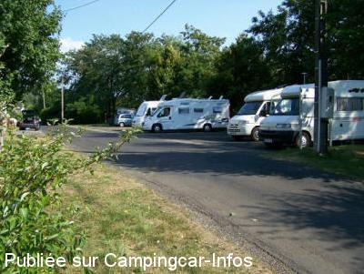

ASN = Aire de services avec stationnement nuit possible de :
DRUGEAC
(N° 579)
Accès/adresse :
D429
Parking gare SNCF
15140 DRUGEAC
Parking gare SNCF
15140 DRUGEAC
Latitude : (Nord) 45.16696° Décimaux ou 45° 10′ 1′′
Longitude : (Est) 2.38674° Décimaux ou 2° 23′ 12′′
Tarif : 2015
Stationnement : gratuit
Services : 2 €
Monnayeur
Type de borne : AIRESERVICES
Services :


Centre bourg à proximité
Autres informations :
Ouvert d'avril à novembre
8 emplacements
Tel : +33(0)471 691 011

Le 11/08/2014 par philbreizh22

Le 11/08/2009 par sicard
Le 01/06/2009 par lebretonbe
Le 01/06/2009 par lebretonbe
de
ibe
le 01/05/2015 :
quelques places de parking en face d'une gare désaffectée mais habitée, en bordure de route. Pas vraiment le pied.
quelques places de parking en face d'une gare désaffectée mais habitée, en bordure de route. Pas vraiment le pied.
de
jacques
le 10/10/2014 :
au bord de la route, face à la gare. on n'est pas reté
au bord de la route, face à la gare. on n'est pas reté
de
Philbreizh22
le 11/08/2014 :
Nous y avons passé 2 nuits les 13 et 14 juillet, endroit très calme et belles balades à faire (source pétillante). Les commerçants sont très accueillants. Bravo à Drugeac
Nous y avons passé 2 nuits les 13 et 14 juillet, endroit très calme et belles balades à faire (source pétillante). Les commerçants sont très accueillants. Bravo à Drugeac
de
david
le 18/06/2009 :
De passage debut juin,aire calme ,commercants et habitants très agréables .Petit village acceuillant avec des sons de cloches (vaches)très reposants.Merci à la municipalité
De passage debut juin,aire calme ,commercants et habitants très agréables .Petit village acceuillant avec des sons de cloches (vaches)très reposants.Merci à la municipalité
de
Napapiiri
le 14/05/2008 :
L'endroit est toujours aussi agréable.
L'endroit est toujours aussi agréable.
de
papyalain
le 30/07/2007 :
aire sympa et calme devant une gare desaffectée , habitants sympas
aire sympa et calme devant une gare desaffectée , habitants sympas
de
pascal et élise
le 02/05/2007 :
sommes passés le 29 avril et je vois que la borne depuis les derniers commentaires n'a toujours pas été réparée. dommage !
sommes passés le 29 avril et je vois que la borne depuis les derniers commentaires n'a toujours pas été réparée. dommage !
de
albert
le 22/08/2006 :
Nous avons séjourné deux nuits sur cette aire très tranquille et pourtant pleine. Village très calme et commerçants sympathiques.
Nous avons séjourné deux nuits sur cette aire très tranquille et pourtant pleine. Village très calme et commerçants sympathiques.
de
christi@n 59
le 20/09/2004 :
Sur la borne, le 220V fonctionne avec 2 euros mais il faut utiliser le monayeur à l'arrière et non celui devant!! j'ai donc perdu 2 euros.
La borne semble un peu vandalisée mais surtout l'environnement et la tranquillité sont toutes relatives.
Sur la borne, le 220V fonctionne avec 2 euros mais il faut utiliser le monayeur à l'arrière et non celui devant!! j'ai donc perdu 2 euros.
La borne semble un peu vandalisée mais surtout l'environnement et la tranquillité sont toutes relatives.
de
lessard
le 03/09/2004 :
Petite aire agréable mi juillet pour 5 ou 6 CC
Borne hors service hélas.
Petite aire agréable mi juillet pour 5 ou 6 CC
Borne hors service hélas.